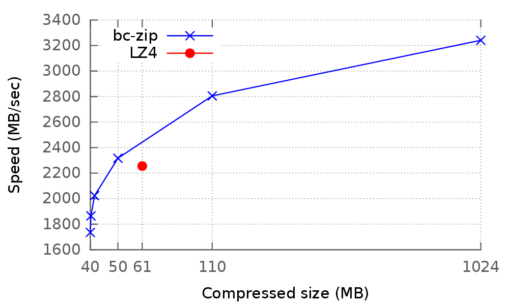

bc-zip is a lossless, general-purpose, optimizing data compressor.
The result of some serious scientific effort, bc-zip can be used to compress a file in order to achieve the best compression ratio. More technically, bc-zip computes the most succinct Lempel-Ziv parsing, which is the same scheme used by gzip, Snappy, LZO, and LZ4. It goes without saying that compressed files are considerably smaller when compressed with bc-zip rather than with the aforementioned compressors.
Have a look at the following table, which has been extracted from our comprehensive set of experiments. Here, a 1GiB-file has been compressed with bc-zip and various state-of-the-art compressors:
| Compressor | Compressed Size (MB) | Decompression speed (MB/sec) |
|---|---|---|
| bc-zip (succinct) | 38.0 | 1319.5 |
| bc-zip (fast) | 40.2 | 1790.2 |
| gzip | 48.2 | 414.2 |
| bzip2 | 40.0 | 68.0 |
| Snappy | 123.7 | 1615.1 |
| LZ4 | 61.8 | 2255.5 |
Moreover, and more importantly, bc-zip can be used to obtain a compressed file such that the decompression time is below a user-specified time and the compression ratio is maximized, and the other way round (compression size bounded, decompression speed maximized). In this way, it is possible to achieve very good compression ratios and decompression speeds comparable or better than those achieved by state-of-the-art compressors Snappy and LZ4. Even better, it is possible to specify the decompression speed dictated by your application requirements, and let bc-zip automatically achieve the highest compression ratio with that constraint.
You can get an idea of what the tool has to offer by looking at the following picture, which shows some space/speed trade-offs achievable by using our compressor, compared to LZ4 
This is achieved through an innovative way of modeling data compression as an optimization problem, along with the use of a decompression time model which accurately estimates the decompression time of a compressed file.
For some experimental results backing those claims or more background about the science behind it, consult the bibliography or visit the dedicated webpage on A³.